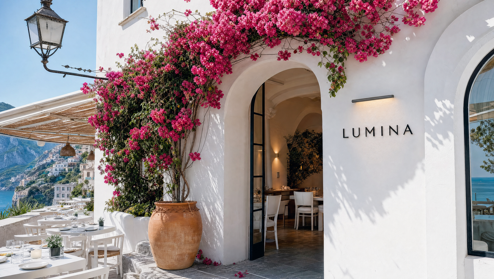

Trattoria · Cucina d’autore
Cocina italiana de autor, bajo una luz distinta.
Pasta fresca, fuego lento y producto de origen. Una mesa donde Italia se sirve despacio.

Nosotros
La paciencia es nuestro primer ingrediente.
Lumina nace de una idea sencilla: que un plato bien hecho no necesita ruido. Cada mañana amasamos la pasta a mano, cada semana elegimos el aceite, la harina y el queso directamente de pequeños productores italianos.
Nuestra cocina de autor respeta la receta de la nonna y la mira con ojos nuevos: menos artificio, más precisión, y una sola obsesión, que el producto hable por sí mismo.
- 14productores aliados
- 48 hde maduración de masas
- 100%pasta hecha en casa
Inspiración regional
Cuatro regiones, una sola mesa.
Cada plato es un homenaje a su tierra de origen: respetamos la técnica local y los ingredientes que la definen.
Reseñas
Lo que dicen en nuestra mesa.
Ubicación y horarios
Te esperamos en Palermo.
Honduras 5200, Palermo SohoBuenos Aires, Argentina (C1414)
Lat −34.5886 · Lng −58.4310
| Martes a jueves | 12:30–15:30 · 20:00–23:30 |
|---|---|
| Viernes y sábado | 12:30–16:00 · 20:00–00:30 |
| Domingo | 12:30–16:30 |
| Lunes | Cerrado |
Reservas
Tu mesa, a un mensaje de distancia.
Completá los datos y te abrimos WhatsApp con el mensaje listo.